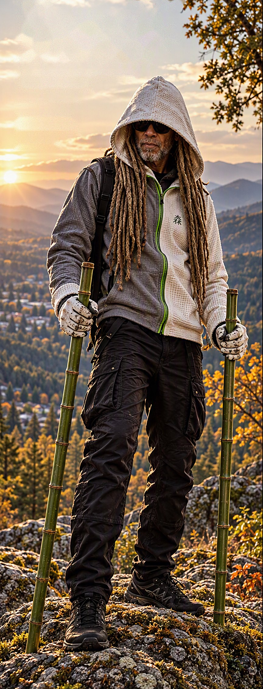
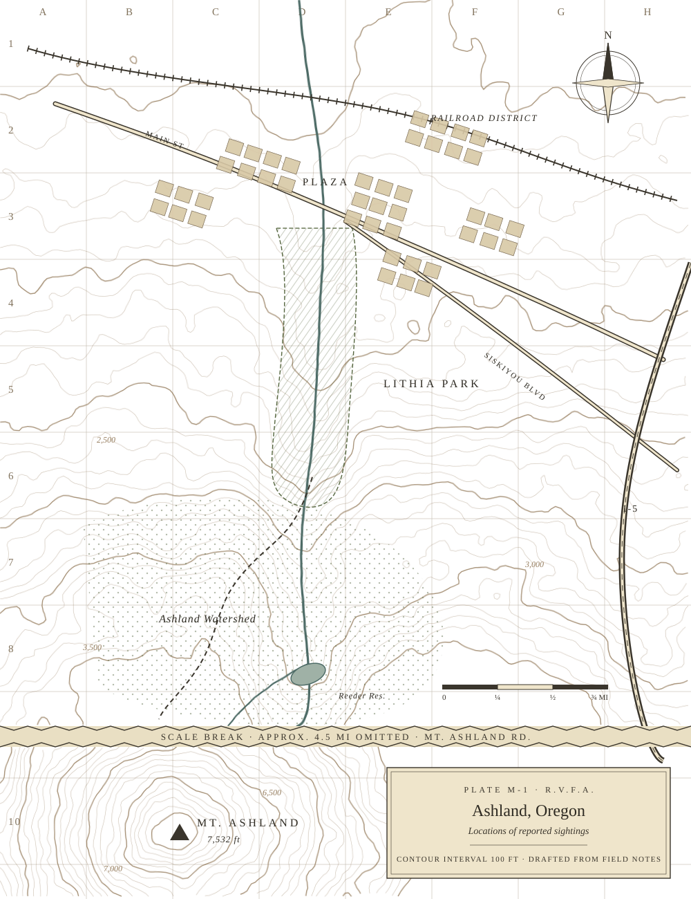
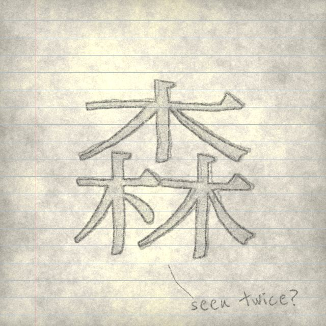
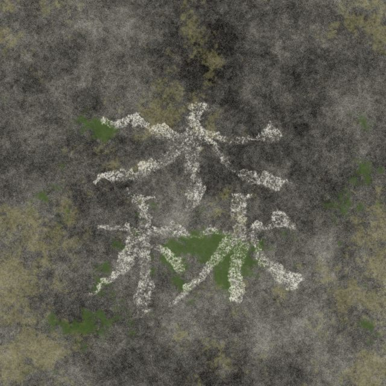

The Bamboo Avenger Research Archive
Documenting reported sightings and associated folklore.
Evidence remains inconclusive.The Bamboo Avenger is a recurring figure reported throughout the Rogue Valley region.
Descriptions vary. Several recurring characteristics remain remarkably consistent.
Observed elements include- Bamboo staves
- Hooded outerwear
- Forest symbol
- Trail systems
- Anonymous acts of service
- Unexplained disappearances
Reconstruction details
CWR-001 · sheets b–eLatest incidents
All fifteen reports
Where reports cluster
Every report in the collection falls within a narrow band running south from the Plaza, up the Ashland Creek canyon, through Lithia Park and into the watershed, with a separate group on Mount Ashland.
The archive has not established why. Most of these places are reached by trail, and most are near water.
- Locations
- 6
- Reports
- 15, 1987 – 2026
- Densest
- Watershed Trail (4)
- Single structure
- Lithia Bridge (2)
Symbol 001
One written character recurs across the collection: stitched on clothing, drawn from memory, chalked on stone, carved into wood.
- Character
- 森
- Translation
- Forest
- Occurrences
- 41, 1994 – 2026
- Use in archive
- Classification symbol · research subject · artifact


How the record is arranged
Three layersThe collection is kept in three layers. Each step deeper moves further from what was observed and closer to what is told. The archive takes no position on whether the Bamboo Avenger is real.
The Archive
Public record. What witnesses reported and what was found.
Evidence remains inconclusive.
The Folklore
Legends and recurring traditions, documented with scholarly caution.
No historical evidence has confirmed these traditions.
The Myth
The stories preserved exactly as they are told. Reached through deeper pages and restricted folios.
- Origin narrative
- Reported capabilities
- Whispering Monk teachings
- Green Vein traditions
- Restricted folios
Unverified narratives. Never presented as fact.
A line of text recurs in the reports.
It has been found written in chalk, in pencil, and folded into a trail register. Its significance remains uncertain.